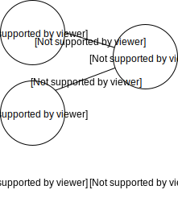
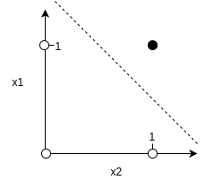
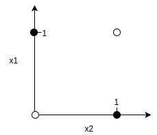
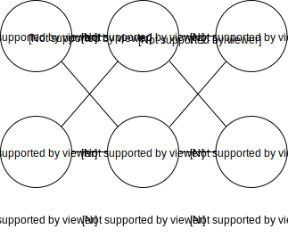
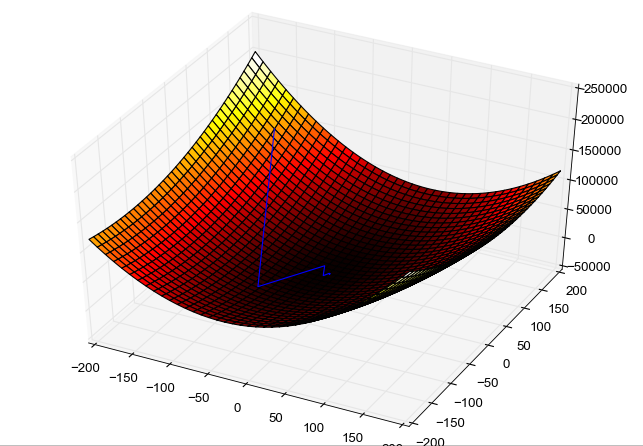

Backpropagation Derivation + Javascript
In this blog post we're going on an Odyssey to decipher the mysteries of the backpropagation algorithm which is a core element of supervised learning of a neural networks. It is for people who already worked a bit with neural networks before but want dive deeper into the math behind the back propagation algorithm. In the end we'll implement an example in Javascript. Yes, JS. You've read it right.Let's start with a simple perceptron:
We want to simulate a simple AND gatter with this perceptron, which outputs only 1 (true) if our attributes, $x_1$ and $x_2$ are 1 (true). If not it outputs 0 (false).
$$ \left[ \begin{array}{cc|c} x_{1}&x_{2}&Expected \, output \, ô\\ 1&1&1\\ 0&1&0\\ 1&0&0\\ 0&0&0 \end{array} \right] $$Our percepton uses a simple step function f(x) as activation function. $$f(x) = 1 \, if \, net \ge Threshold$$ $$f(x) = 0 \, if \, net \lt Threshold$$ $$with: net = \sum_{j} w_{ij} * x_{i}$$ and Threshold.
Which just means if we do $$net = w_{1}*x_{1} + w_{2}*x_{2}$$ $$net \ge Threshold$$ then the output o of $f(net)$ will be 1. (true), if not then it will be 0 (false).
We expect that if we feed our perceptron with a sample of
the form $s=[x1,x2]$ that the output o, is equal to ô.
For example, for sample $s1=[1,1]$ we expect output o to be equal to ô, which is 1.
On the other hand, for sample s2=[0,1] we expect o to be 0.
Delta rule
The threshold and weights of our perceptron are randomly initialized. To teach something to our perceptron we need to be able to update our weights until we get the correct, expected output ô for our inputs.
Let's have a look at the delta rule with the following example to train our perceptron. We repeatedly apply the delta rule for every weight: $$\Delta w_{ij} = \alpha * x_{i} * (ô - o)$$ and update a weight by adding $\Delta w_{ij}$ to the weight: $$w_{ij} := w_{ij} + \Delta w_{ij}$$
Example
$\alpha$ is a constant which we initialize with 0.3. Let's say our Threshold is 0.5 and the weights are initialized with $w_1 = 0.1$ and $w_2 = 0.8$.
During the training phase we first feed our perceptron with the sample $s1=[0,1]$. The expected ouput of s1 is $ô=0$.
- We calculate $net = 0.1*0 + 0.8*1 = 0.8.$
-
Now, we apply the step function f(x) with $Threshold=0.5$ $\rightarrow$ f(0.8) $\rightarrow$ 0.8 >
Threshold.
0.8 is greater than 0.5, which means the output of the perceptron is 1.
However, the expected output ô for this sample is 0. - We calculate $$ô - o = 0-1 = -1$$ and apply the delta rule to our weights: $$\Delta w_{ij} = \alpha * x_{i} * (ô - o)$$ $$\Delta w_{1} = 0.3 * 0.1 * (-1) = -0.03$$ $$\Delta w_{2} = 0.3 * 0.8 * (-1) = -0.24$$ And we use them to update our coresponding weights: $$w_{1} = w_{1} + \Delta w_{1} = 0.1-0.03 = 0.07$$ $$w_{2} = w_{2} + \Delta w_{2} = 0.8-0.24 = 0.56$$
- With the new weights we repeat the 1. step: $net = 0.07*0 + 0.56*1 = 0.56$
-
We apply the step function again: $f(0.56). 0.56 > Threshold \rightarrow 0.56 > 0.5$
In this case 0.56 is greater than 0.5 and we get f(0.56) = o = 1. Since (ô - o) = (1-1) = 0 and $$w\Delta_{ij} = \alpha * x_{i} * (ô - o) = \alpha * x_{i} * 0 = 0 $$ is also 0, there is no need to update our weights. - We need to repeat this process for all our samples until the pereceptron classifies them correctly.
Let's implement the training algorithm in Javascript. We are going to use math.js which you can install via npm:
npm install mathjs
Here is the implementation
const samples = [[0, 0], [1, 0], [1, 1], [0, 1]];
const expected_outpus = [0, 0, 1, 0];
let weights = [0.1, 0.8];
const ALPHA = 0.3;
const THRESHOLD = 0.5;
const net = (w, x) => math.sum(math.dotMultiply(w, x));
const f = w => w > THRESHOLD ? 1 : 0;
// Let's train our perceptron by repeatedly applying the delta rule to update our weights
for(let i=0; i<10; i++) {
samples.forEach((sample, i) => {
const output = f(net(weights, sample));
weights[0] = weights[0] + ALPHA * sample[0] * (expected_outpus[i] - output);
weights[1] = weights[1] + ALPHA * sample[1] * (expected_outpus[i] - output)
console.log("weights", weights);
});
}
As you can see in the console, the weights do not change after a certain iteration.
They stay at: $w1=0.1$,$w2=0.5$
If you would feed it with e.g. $s=[1,0]$ it will output 0, for false, as expected.
$$net = 0.1*1 + 0.5*0 = 0.1 \rightarrow f(0.1) \rightarrow 0.1 < Threshold \rightarrow f(0.1)=0$$
Problem of perceptron
The problem with the perceptron is, that it is very limited.Linear Sparability
Let's plot the samples $s1=[0,0],s2=[0,1],s3=[1,0],s4=[1,1]$ of our AND perceptron as points on a graph, where the x-axis is x2 and the y-axis is x1. The black dots represent the classification 1 (or true) and the white dots represent the classification 0.
 We are able to draw a line between the white (false) and black (true) classfied samples. This is called linear separability. The Perceptron can only be used on a training set if it is linear separability is guaranteed. It can't classify samples correctly where this is not the case, as for XOR.XOR
The expected outputs for XOR for our inputs are: $$ \left[ \begin{array}{cc|c} x_{1}&x_{2}&Expected \, output \, ô\\ 1&1&0\\ 0&1&1\\ 1&0&1\\ 0&0&0 \end{array} \right] $$If we plot that we get the following:
 We are not able to draw a line between the two classes white (true) and black (false) to separete them.That's why we need neural networks to be able to handle more complex problems.
Neural Network

To allow creating more complex applications we need more neurons and layers. A neural network is nothing
more than many connected perceptrons. The output of one perceptron is the input of the next perceptron
in the next layer.
This network has an input layer, a hidden layer and an output layer.
Because of the hidden layer we can't use the simple Delta rule to teach our network how to
behave. We need to do some extra work there.
Error / Cost Function & Gradient Descent
$$ E = \frac{1}{2} \sum_{s} (ô^s-o^s)^2$$E is just a summation of all errors for all samples s. It tells us how good or bad our neural network is in classifing all our samples correctly. E therefore, is the global error of our network. E is called the error or cost function.
The vector ô is the expected output for the sample s and the output is given by o which is a function over ALL weights in all layers in our neural network.
To train the neural network we need to minimize the global Error, the cost function. The simpliest approach to get a minimum of a function is to take the derivation of it. Since a neural network can have billions of attributes instead of two (x1, x2) as shown above, we can't do that. This would take ages. Instead we use a technique called Gradient Descent.
Let's say we have just two attributes as above. (This makes it possible to plot in the 3D space)
The minimum as should be exactly at $(x:0, y:0, z:0)$ in our graph. We get to the minimum by changing the weights by in our network in a way that the output and expected output get closer. We achive this by moving down in the direction of every weight. The direction of a weight $w_{mn}$ is represented by the partial derivative (gradient): $$\partial{E}/\partial{w_{mn}}$$ This means we need to update all weights with their corresponding $\Delta w$ $$\Delta w_{mn} = -\alpha * \partial{E}/\partial{w_{mn}} .$$ Alpha is a constant wich tells us far much we need to move down on each step. Having all the $\Delta w$'s we know how far we need to move in every direction of a weight. We 'collect' all this down movements and calculate the 'avarage' movement of all of them: $$E\Delta= \sum_{mn} \partial{E}/\partial{w_{mn}} * \Delta w = \sum_{mn} \partial{E}/\partial{w_{mn}} * -\alpha * \partial{E}/\partial{w_{mn}} = -\alpha \sum_{mn} [\partial{E}/\partial{w_{mn}}]^2 $$
Now we update E like the following: $$E = E\Delta + E_s$$
s is the Error for our first sample.We repeat this procedure for all our samples and until we've reached the minimum.
But how do we calculate our gradients? Backpropagation
To actually calculate the partial derivatives of all our weights we use backpropagation.Forward Propagation
First we need to calculate the output $o$ of our neural network by using forward propagation, for the first sample, which works just like the perceptron. We calculate $net$ and $f$ for every neuron in every layer. The output of a neuron will serve as input for the neurons in the next layer. Except the neurons of the output layer, which will output the result of the network for a given sample.
As we don't know what the expected ouput ô of every neuron in the hidden layers is supposed to be we use backpropagation to propagate the ouput error (ô-o) of the output layer back to all the hidden layers. It calculates the partials $$\partial{E}/\partial{w_{mn}}$$ for every weight in the network to calculate the corresponding w_delta to update the weight. These are the update rules for each weight:- $$\delta_i = f'(net_i)*(ô_i-o_i)$$
- For the ouput layer: $$w_\Delta = \alpha * o_{j} * \delta_i$$
- For the hidden layers: $$w_\Delta=\alpha * o_{i} * f'(net) * \sum_{k}(\delta_k*w_{ki})$$
o_j is the activation of the previous neuron. $$\sum_{k}(\delta_k*w_{ki})$$ is the summation of the product of errors and weights of the next layer closer to the final output layer (until recursively the final layer is reached)
Backpropagation Derivation
But how do we get the above two rules? Let's write down the derivation.
As we've said. Backpropagation helps us to get the partial derivatives of the cost function for all weights in our network $$\frac{\partial E}{\partial w_{mn}}$$ to be able to update the weights and decreasing the global error.
We start with the derivation of a sigle weight w^i_11 on the output layer (See image above between a1 and o1): Since w_mn is not directly a part of the equation of the cost fucntion E $$ E = \frac{1}{2} \sum_{s} (ô^s-o^s)^2$$ we need to apply the chain rule. $$\partial E / \partial w_{mn} = \partial E / \partial w_{mn} * \partial E \ o $$ We need to apply the chain rule a second time, because w^i_11 is not part of the function o $$o=f(net)$$ $$ \frac{\partial E}{\partial w_{mn}} = \frac{\partial E}{\partial o} * \frac{\partial o}{\partial net} * \frac{\partial net}{\partial w_{mn}} $$ We can stop applying the chain rule now, because we know the w^i_11 is inside the function net $$ net = \sum_{j} w_{ij} * x_{i}$$ Now partially derive every expression. Since we are looking only at one weight in the ouput layer. Only one neuron is responsible for the outcome. That's why we can remove the sumation from the function E, before deriving: $$ E = \frac{1}{2}(ô-o)^2$$ Let's derive step by step: $$\frac{\partial E}{\partial w^i_{11}} = -(ô-o) * \frac{\partial o}{\partial net_j} * \frac{\partial net_j}{\partial w^i_{11}} $$ The derivation of the second expression $$o = f(net_j)$$ is just $$f'(net_j)$$: $$\frac{\partial E}{\partial w^i_{11}} = -(ô-o) * f'(net_j) * \frac{\partial net_j}{\partial w^i_{11}} $$ Now we have $$net_j = \sum_i(w_{ij} * a_{i}) = w^i_{11} * a1 + w^i_{12} * a2$$ and after deriving by $$w^i_{11}$$ we get $$\frac{\partial E}{\partial w^i_{11}} = -(ô-o) * f'(net_j) * a_i $$ Now we set $$\delta = -(ô-o) * f'(net_j)$$ and get our: $$w_\delta = \alpha * a_i * \delta$$ for the output layer. We repeat the same for the weight $$w^k_{11}$$ between our input layer and our hidden layer. $$ \frac{\partial E}{\partial w^k_{11}} = \frac{\partial E}{\partial o} * \frac{\partial o}{\partial net_j} * \frac{\partial net_j}{\partial w^k_{11}} $$ This time $$net_j = \sum_i(w_{ij} * a_{i})$$ does not contain our weight $$w^k_{11}$$ That's why we need to apply another chain rule. Remember that $$a_i = f(net_i)$$ $$\frac{\partial E}{\partial w^k_{11}} = \sum_j(-(ô-o)) * f'(net_j) * \frac{\partial net_j}{\partial a_{i}} * \frac{\partial a_i}{\partial w^k_{11}} $$ Also the activation function of $$a_i = f(net_i)$$ does not contain $$w^k_{11}$$. That's why we apply the chain rule again. $$\frac{\partial E}{\partial w^k_{11}} = \frac{\partial E}{\partial o} * \frac{\partial o}{\partial net_j} * \frac{\partial net_j}{\partial a_{i}} * \frac{\partial a_i}{\partial net_i} * \frac{\partial net_i}{\partial w^k_{11}} $$ Our net_i contains w^k_{11}: $$net_i = \sum_k(w_{ki} * a_{k}) = w^k_{11} * x1 + w^k_{12} * x2$$ We can stop applying the chain rule now. All we need to do is to resolve the above derivation terms. This time we can't remove the summation from our E function, because we need all the neurons of the output function to get the proper values for weight of the hidden function. $$\frac{\partial E}{\partial w^k_{11}} = \frac{\partial E}{\partial o} * \frac{\partial o}{\partial net_j} * \frac{\partial net_j}{\partial a_{i}} * \frac{\partial a_i}{\partial net_i} * \frac{\partial net_i}{\partial w^k_{11}} $$ $$\frac{\partial E}{\partial w^k_{11}} = \sum_j(-(ô-o)) * f_j'(net_j) * w^j_{ij} * f_i'(net_i) * \frac{\partial net_i}{\partial w^k_{11}} $$ And finally: $$\frac{\partial E}{\partial w^k_{11}} = \sum_j(-(ô-o)) * f_j'(net_j) * w^j_{ij} * f_i'(net_i) * x_k $$ We set $$\delta = -(ô-o) * f_j'(net_j)$$ and get $$\frac{\partial E}{\partial w^k_{11}} = x_k * f_i'(net_i) * \sum_j(\delta * w^j_{ij}) $$ $$w\Delta = \alpha * x_k * f_i'(net_i) * \sum_j(\delta * w^j_{ij})$$ for the hidden layer.